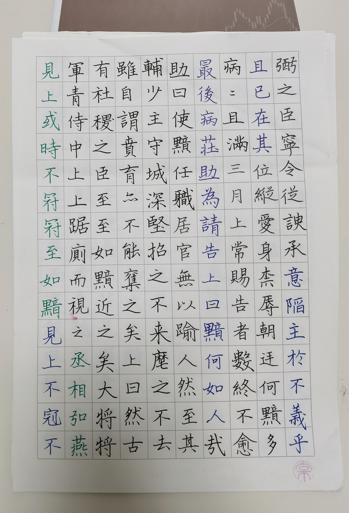
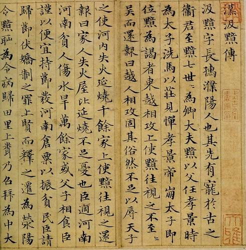
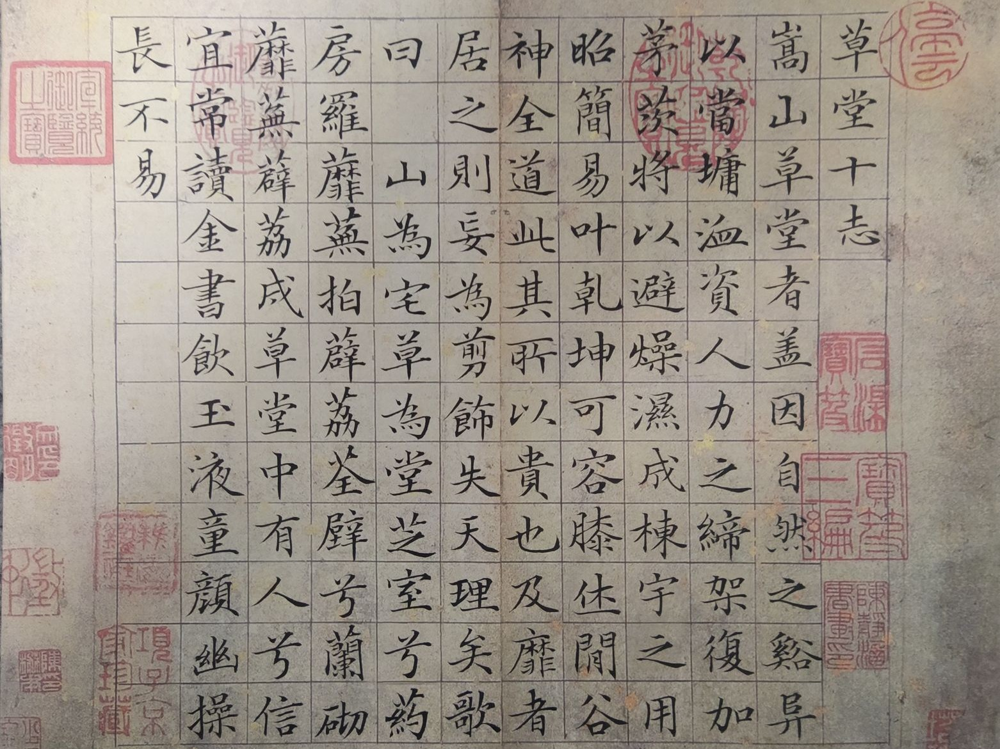
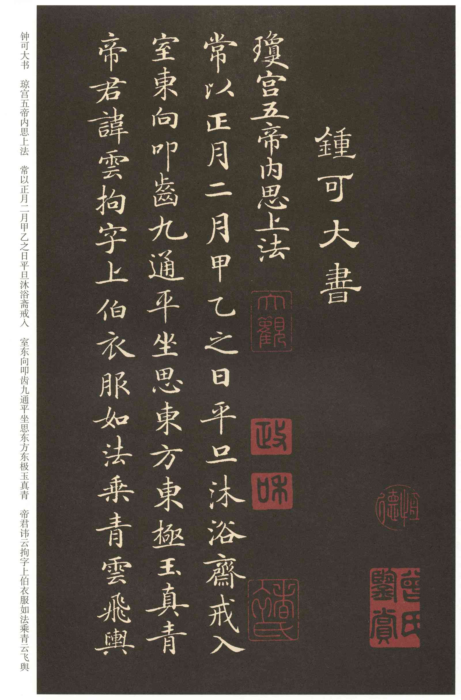
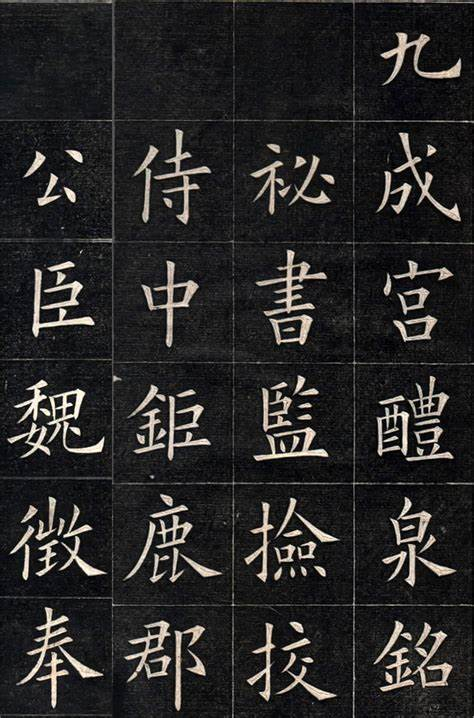
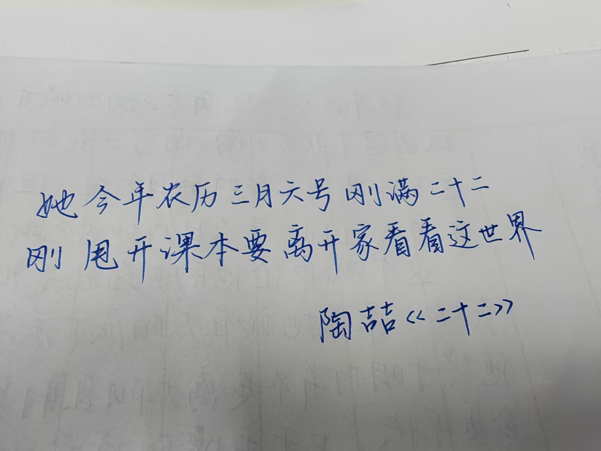
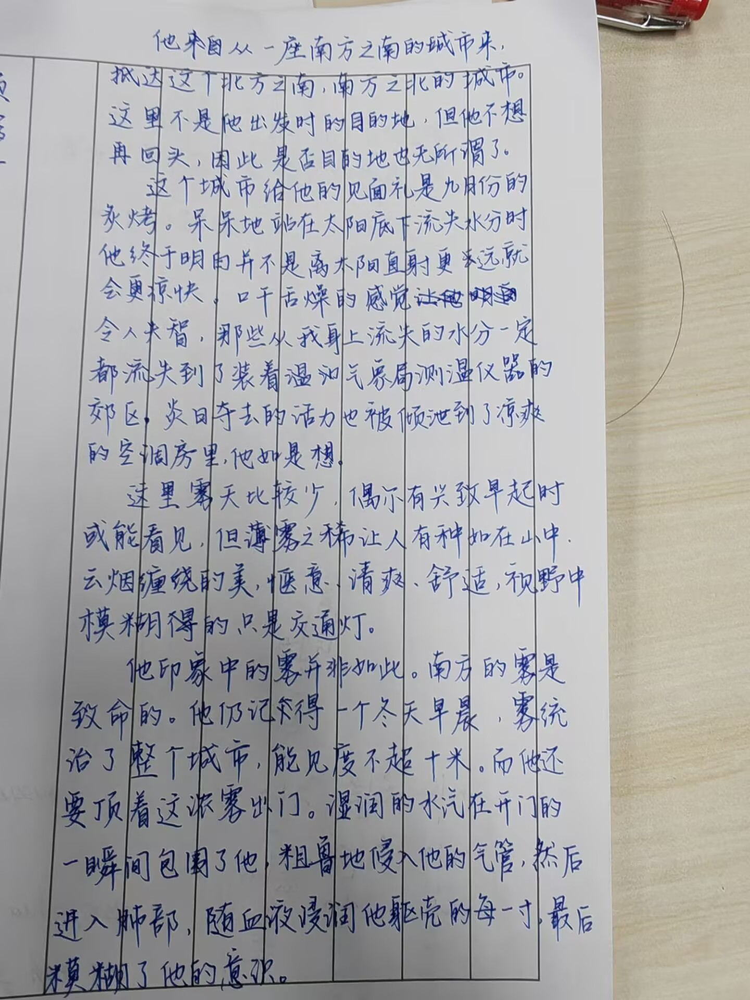
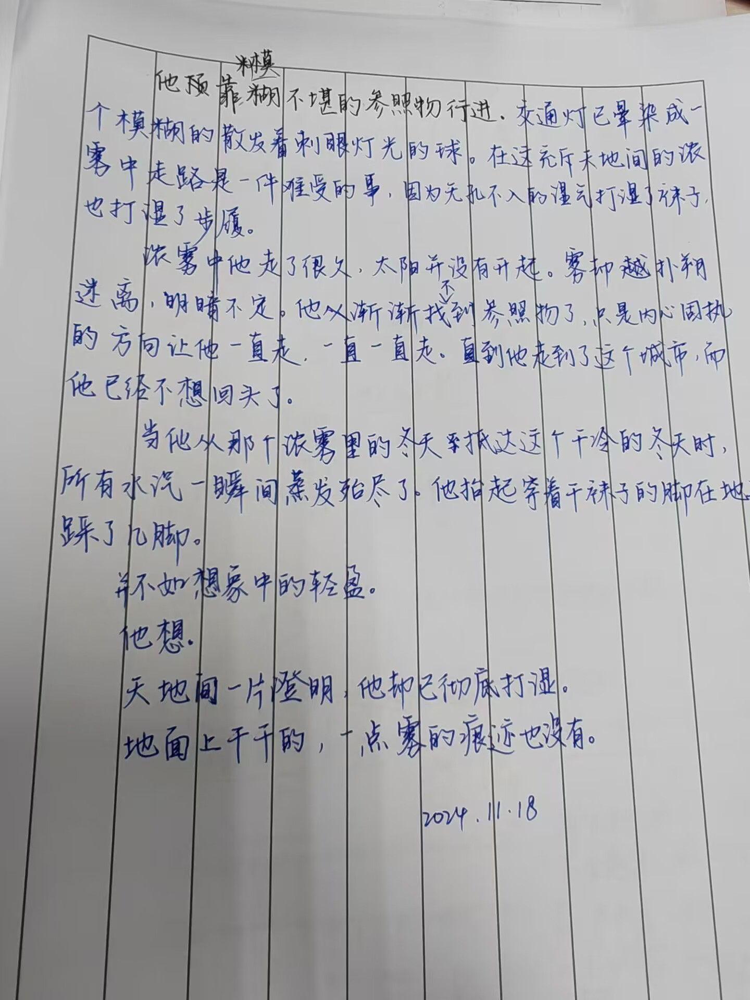

书法
游蛇
吾资质平庸，复不勤于砥砺，久疏翰墨，字迹草率，勉强呈君一观。


汲黯传
第一次临赵孟頫是写他的《洛神赋》，然后第二次是这个，虽然一个婉柔至极，一个刚正不屈，但是居然都符合文本大意，书家底力可见。

文征明
第一次写古帖。被B站杨镇灵姐姐带进来的，刚开始真的觉得《草堂十志》好丑，完全不觉得好看。后面越写越觉得好看，又继续写了《琴赋》，《落花诗卷》《千字文》太多了没写完。兜兜转转这么多，最终觉得最开始的《草堂十志》才是真神。（这帖写了三次，属于最喜欢的一本了）

灵飞经
唐代抄经生的小楷真的好严格...这种戴着镣铐跳舞的灵动我不敢想象书生的基本功有多高...我完全没法学到精髓，只能学点表面功夫

九成宫
偶听调侃：九成宫，九成都不成啊！结字严格冷峻，我也就只能摹其外形而难免失其笔意了。

近来笔迹
很久没写了，已经不会结字了。


随笔
心情不复潮湿，字迹也干瘪难看。
由于时间久远，临摹的字迹已经很难找全，仅有的一张还仰托所赠好友悉心保管。近来久不碰笔墨，笔墨已经严重变形，您就图一乐看看吧。